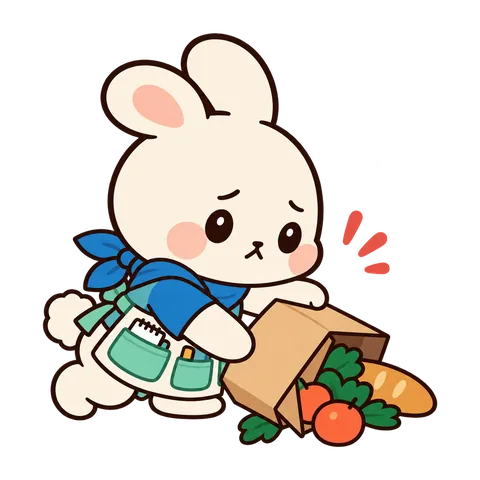
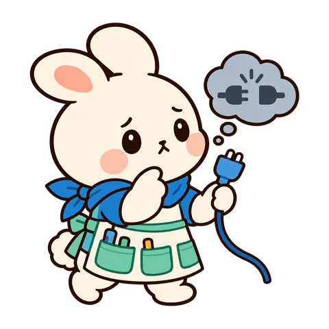
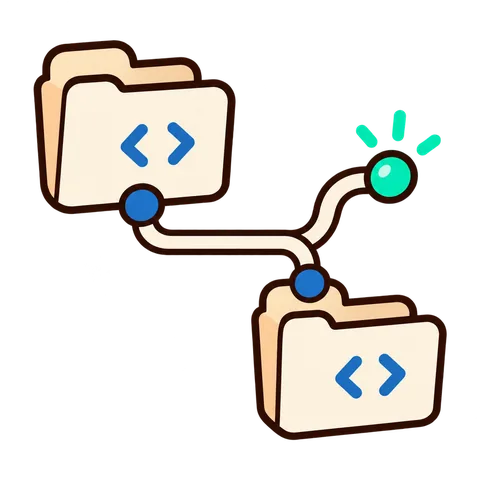
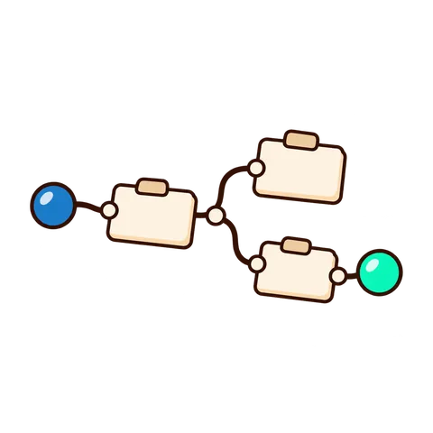

일러스트 자리
상태
승인을 기다리고 있어요
카드에서 허락하면 이어서 진행해요.
state-approval-wait
다 됐어요
결과물을 열어 확인해 보세요.
state-complete
아직 아무것도 없어요
무엇이든 시켜 보세요. 결과물이 여기에 쌓여요.
state-empty

문제가 생겼어요
다시 시도하면 대부분 돌아와요.
state-error

연결이 끊겼어요
연결되면 이어서 보여 드릴게요.
state-offline
사용량이 거의 찼어요
한도가 풀리는 시각에 이어서 해요.
state-usage-limit
일하는 중이에요
끝나면 알려 드릴게요. 다른 화면을 봐도 돼요.
state-working
온보딩
심부름은 제가 할게요
폰에서 시키면 Mac 이 일해요.
onboarding-01-intro
이렇게 시켜요
말하듯 적으면 작업 카드가 만들어져요.
onboarding-02-task
결과는 폰으로
파일과 요약이 바로 도착해요.
onboarding-03-result
도메인 빈 상태
첫 글을 써 보세요
한 줄 이유와 다음 행동 하나.
empty-blog
프로젝트를 만들어 보세요
한 줄 이유와 다음 행동 하나.
empty-game-creation

저장소를 연결해 보세요
한 줄 이유와 다음 행동 하나.
empty-github-project
구조가 아직 비어 있어요
한 줄 이유와 다음 행동 하나.
empty-harness-visualization
아직 실험이 없어요
한 줄 이유와 다음 행동 하나.
empty-ml-research
자료를 추가해 보세요
한 줄 이유와 다음 행동 하나.
empty-notebook-library
연결할 기기가 없어요
한 줄 이유와 다음 행동 하나.
empty-remote-control
관심 종목이 없어요
한 줄 이유와 다음 행동 하나.
empty-stock-analysis

아직 결과가 없어요
한 줄 이유와 다음 행동 하나.
empty-work-visualization
자리만 둔 상태(그림이 아직 없거나 못 불러올 때)
찾을 수 없어요
주소가 바뀌었거나 지워졌어요.
state-not-found (미납품)